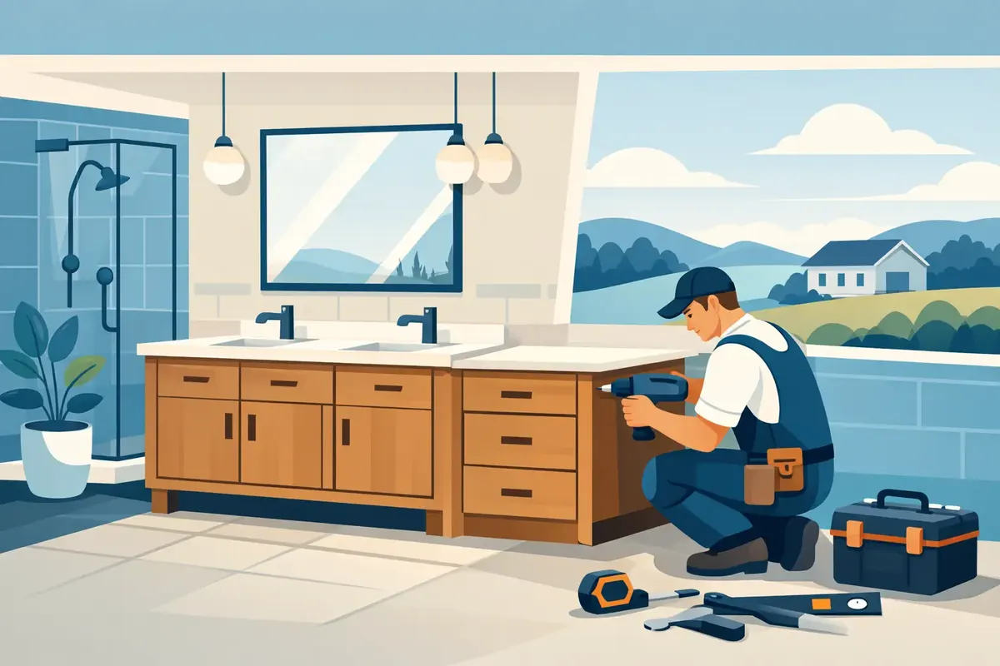

A new vanity can make a dated bathroom feel clean, useful, and more like home. But when you search for bathroom vanity installation Woodbury TN, the project is about more than choosing a cabinet color or a new faucet. It involves water supply lines, drain alignment, shutoff valves, wall support, and careful protection against the small leaks that can damage flooring, drywall, and cabinets over time.
A vanity should look right on the day it is installed and work reliably long after the bathroom remodel is finished. That calls for careful planning and plumbing work that respects your home, your schedule, and your budget.
What a Bathroom Vanity Installation Really Includes
Vanity installation is often treated as a simple replacement project. In some bathrooms, it can be. If the new vanity has the same width, sink location, and plumbing layout as the old one, the work may be straightforward. Even then, the connections beneath the sink deserve close attention.
A proper installation begins with removing the existing vanity without damaging the wall, flooring, or nearby plumbing. The installer checks the water shutoff valves, supply lines, drainpipe, and trap assembly before connecting the new fixture. Older valves may be difficult to turn, corroded, or prone to leaking once they are used. Replacing a worn valve during the project is usually far less stressful than discovering a drip after the new cabinet is in place.
The vanity itself must be level, securely anchored, and positioned so drawers and doors open correctly. The sink, countertop, faucet, drain, and backsplash must also work together. A small misalignment can create gaps at the wall, strain a drain connection, or leave water with an easy path behind the cabinet.
Common Challenges With Bathroom Vanity Installation in Woodbury, TN
Every bathroom has its own surprises, especially in homes with older plumbing or previous remodeling work. A new vanity may be deeper or wider than the old model, which can expose unfinished flooring or interfere with baseboards. A wall-mounted vanity may need additional blocking inside the wall to safely carry its weight.
The plumbing layout matters just as much. Many vanities have drawers, shelves, or interior dividers that reduce the open space around the drain. If the drainpipe comes through the wall at the wrong height or too far to one side, it may conflict with the cabinet. Forcing the drain to fit is not a lasting solution. The better approach may be to adjust the drain piping so it remains properly supported and accessible.
A change from a single-sink vanity to a double-sink vanity creates a larger plumbing project. It can require new drain branches, new water lines, additional shutoff valves, and a careful look at whether the existing drain can handle the layout. The same is true when moving a vanity to a different wall. That type of work may involve opening walls, relocating pipes, and coordinating with other parts of the remodel.
Choosing a Vanity That Works With Your Plumbing
Before ordering a vanity, measure more than the available wall space. Confirm the width, depth, height, door swing, drawer clearance, and distance to the toilet or shower. Leave room to comfortably use the bathroom rather than filling every open inch with cabinetry.
Then look inside the cabinet. Note where the drain opening sits and how much space is available for supply lines and the P-trap. A beautiful vanity with deep center drawers may need a specific plumbing configuration. If you are buying a wall-hung unit, verify its weight rating and installation requirements before the cabinet arrives.
Sink style changes the plan as well. A vessel sink sits above the countertop and usually needs a taller faucet. An undermount sink creates a clean countertop surface but must be securely attached and properly sealed. Integrated tops can simplify the installation, while separate countertops and sinks offer more design flexibility. There is no single best choice - the right fit depends on your family’s needs, cleaning preferences, storage goals, and bathroom layout.
Why Shutoff Valves and Supply Lines Deserve Attention
The small parts under a bathroom sink do a great deal of work. The angle stops, commonly called shutoff valves, let you stop water to the faucet without shutting down water to the entire home. When they are old, stuck, or leaking, a simple faucet repair can quickly become inconvenient.
During a vanity project, it is wise to inspect these valves and the flexible supply lines. Supply lines can wear out, kink behind a tight vanity, or develop leaks at their connections. A licensed plumbing professional can determine whether existing components are in good condition or whether replacement is the safer choice.
This is also an ideal time to make sure the drain trap is accessible. The trap holds water that blocks sewer gases from entering your bathroom. It should be installed correctly, sealed properly, and easy to service if hair, soap residue, or a dropped item causes a blockage. A cabinet that looks tidy but leaves no practical access to the trap can create a frustrating repair later.
When a Vanity Upgrade Reveals a Bigger Plumbing Issue
Sometimes removing an old vanity exposes water staining, soft flooring, mold concerns, or a slow leak that had been hidden for years. It is tempting to cover the evidence with a new cabinet and move forward. That can turn a manageable repair into a much more expensive problem.
If there is active moisture, damaged pipe, or a drain that has been leaking inside the wall, address it before installing the new vanity. The same applies if water pressure is unusually low, the drain runs slowly, or the faucet area has recurring odors. These signs can point to a problem beyond the fixture itself.
A professional inspection provides a clear path forward. Sometimes the answer is as simple as replacing a valve or resealing a drain. In other cases, repiping a short section, repairing the wall, or correcting an improperly installed drain may be necessary. Honest recommendations and upfront pricing help you make that decision without guesswork.
Planning a Smooth Vanity Installation
A little preparation protects your investment and helps the work move efficiently. Have the vanity, countertop, sink, faucet, drain assembly, and any matching backsplash available before installation begins. Confirm that all pieces arrived undamaged and that the faucet is compatible with the holes in the countertop or sink.
Clear personal items from the bathroom and create a path from the entrance to the work area. If your home has children or pets, plan for limited bathroom access while the work is underway. For a primary bathroom with no alternate sink nearby, ask about the expected timeline and whether the water will need to be off for part of the project.
For landlords and property managers, timing matters even more. A vanity repair or replacement between tenants may prevent an emergency call after move-in. For commercial properties, secure fixture connections and functioning shutoff valves help reduce disruptions for employees, customers, and visitors.
Professional Help for Bathroom Vanity Installation Woodbury TN
A skilled plumbing installation gives your new vanity the dependable foundation it needs. The goal is not simply to make the faucet run before the technician leaves. It is to ensure the vanity is connected safely, the drain flows properly, the cabinet has the clearance it needs, and the area beneath the sink is checked for leaks.
Angle Stop Plumbing brings 31 years of experience, respectful in-home service, and family-friendly standards to plumbing projects across Middle Tennessee. As a veteran-owned local company, the team believes customers deserve clear communication, courteous professionals, and workmanship that supports lasting peace of mind. The No Foul Language Guarantee reflects the same respect the team brings to every home.
If your project includes a new faucet, sink, drain repair, shutoff valve replacement, or plumbing relocation, it makes sense to have the work evaluated as one coordinated job. That approach can help avoid repeat visits, protect your new cabinetry, and give you confidence in what is behind the doors and drawers.
A bathroom vanity should make daily routines easier, not give you another place to worry about hidden water damage. Choose materials you enjoy, leave room for proper plumbing access, and make sure every connection is treated with the care your home deserves.